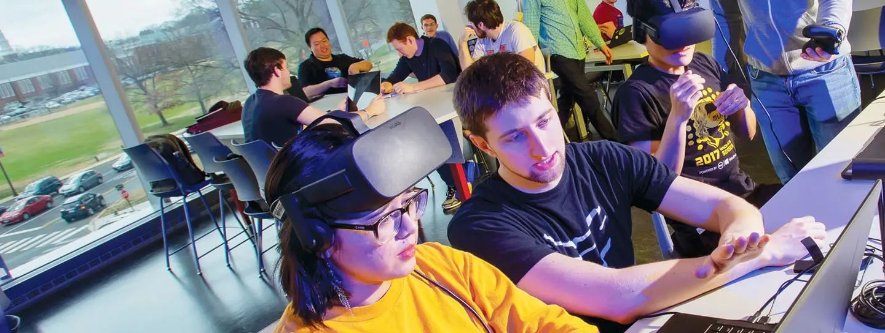
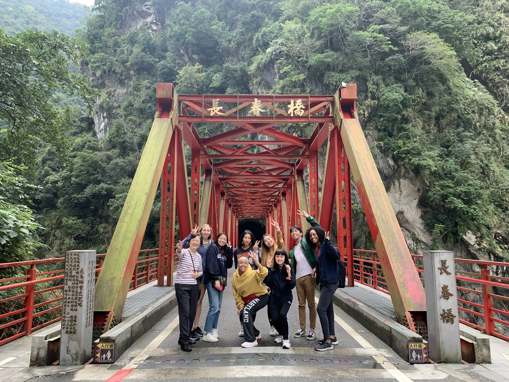
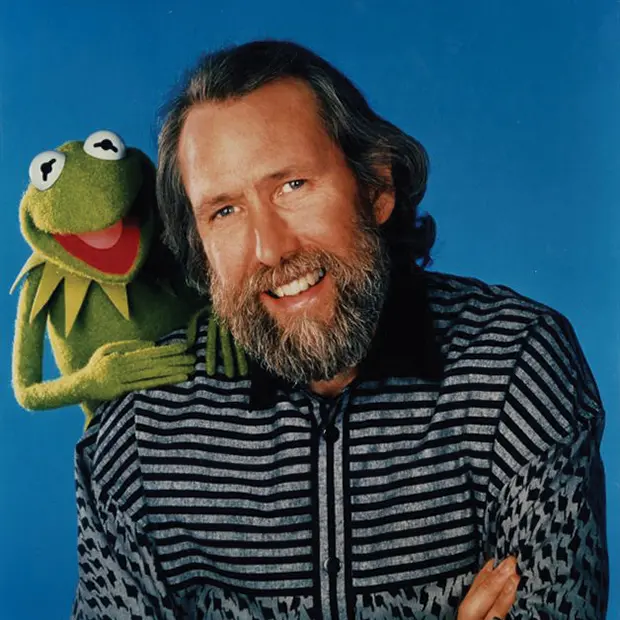
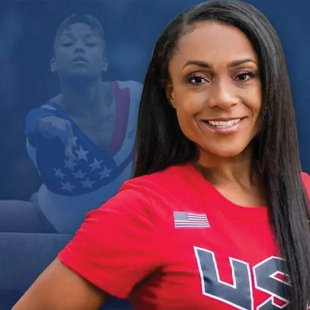
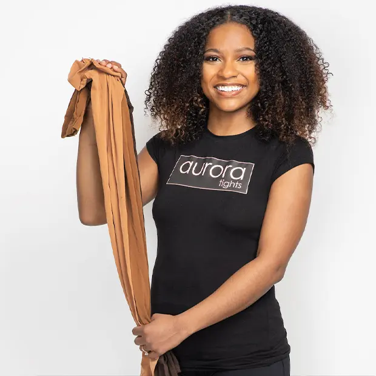

The University of Maryland (UMD) is consistently recognized as one of the preeminent public research universities in the United States.
Study Here
Our Terps are fearless innovators across every discipline — Nobel laureates, Pulitzer Prize winners, members of the national academies, MacArthur Fellows, and Pell Scholars among them. Whether your passion is computer science, journalism, public health, or the performing arts, you'll find faculty mentors and classmates pushing the boundaries of what's possible.
Undergraduate Majors
Student-to-Faculty Ratio
Colleges, schools and programs ranked in the top 25 nationwide
2025 U.S. News & World Report
With more than 100 majors across 12 colleges and schools, choosing a path at UMD is an act of discovery. Talk to advisors, sit in on classes, and meet the faculty doing work that excites you — your major isn't a label, it's the start of how you'll shape your career.
The full undergraduate catalog — every major, minor, and certificate offered across UMD's 12 colleges and schools, with course requirements and degree paths.
Twelve schools, one university — explore the colleges that make up UMD, from Engineering and Business to Public Policy, Public Health, and the Arts & Humanities.
Research, internships, and education abroad turn ideas into experience — and Terps into the kind of graduates employers and grad schools come looking for.
Join faculty-led research from your first year. The Office of Undergraduate Research connects students with labs, archives, studios, and grants across every college.
From DC consulting firms to Maryland startups, the University Career Center helps Terps land internships that turn into careers.

Study in 70+ countries through the #TerpsAbroad program. Short faculty-led trips, semester exchanges, and full-year immersions — there's a fit for every major.
About half of UMD's first-year students join a living-learning program — small academic communities that share a residence hall, take a few classes together, and pursue a common interest, from entrepreneurship to global public health.
Terps go on to lead, build, perform, report, and invent across every field. A few of the names you may know.
Kevin Plank '96
Founder, Under Armour
Gayle King '76
Co-host, CBS Mornings

Jim Henson '60
Creator, The Muppets
Connie Chung '69
Journalist and news anchor

Dominique Dawes '02
Olympic gold medalist, gymnastics
Brendan Iribe
Co-founder, Oculus VR
Larry David '69
Co-creator, Seinfeld; creator, Curb Your Enthusiasm
Aaron McGruder '96
Creator, The Boondocks

Jasmine Snead '15
Engineer and STEM advocate
Gail Berman '78
Television and film executive
Robert Briskman '54
Co-founder, Sirius Satellite Radio
Ethan Brown '04
Founder, Beyond Meat
Dianne Wiest '69
Two-time Academy Award–winning actress
Jason Reynolds '05
Award-winning author of young adult fiction
Jeff Kinney '93
Author, Diary of a Wimpy Kid
Robert Basham '70
Co-founder, Outback Steakhouse
The complete listing of UMD's undergraduate programs, requirements, and policies — your reference for everything academic.
Career counseling, internship placement, employer connections, and the tools to turn your degree into a meaningful first job.
Get updates on application deadlines, campus visits, and what's happening at Maryland.